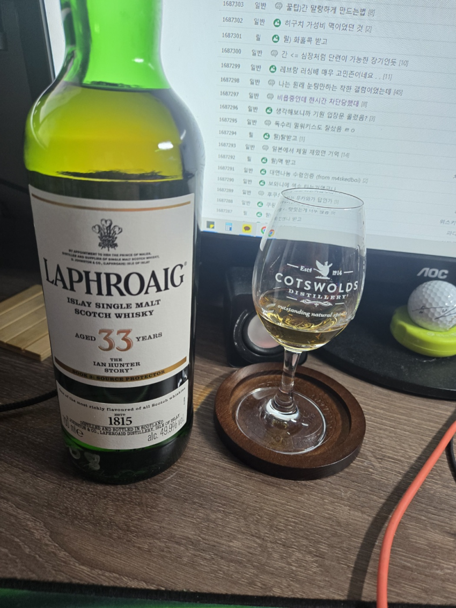

라프로익 33y 이안헌터 3권 49.9%
n 피트,고소한 비스킷, 프루티, 레몬, 바닐라, 플로럴, 꿀, 바닷가, 허브, 스모키 바닷물에 젖은 나무
라프특유의 피트향이 부드럽게 다가오며 해변향이 치고들어온다
고소한 비스킷과 함께 과일의 프루티함
레몬의 시트러스함과 약한 바닐라향
강하지 않으며 달콤한향 (인공적이지 않은 은은한 꿀향)
부드러운 스모키향
바닷물의 젖은 나무향
약간의 허브류의 민티함 과 아주 옅은 매운향
p 레몬필, 열대과일바구니,후추, 바다에 젖은나무, 꿀, 스모키
약간의 시트러스하고 약한씁슬한 레몬필로 시작으로 열대과일 바구니의 향연이 시작되며
단조롭기만 한 맛을 옅은 후추와 약간의 소금기잇는 나무류의 맛이 잘 어우러지며
옅은 꿀의 달달함과 스모키한 맛이납니다.
f 피트, 시트러스, 스모키, 감초, 프루티, 재
여운이길다
라프로익 특유의 피트와 약간의 새콤함
옅은 과일 믹스류의 상큼함이 살짝 나다가 나무에서 오는 달달함
그리고 재의 맛이 은은하게 남는다.
오랜만에 라프로익을 마십니다.
계속 마시면서 갸웃 거리면서 마시는 한잔이네요
라프로익 18y (녹튭+흰튭) 을 고숙을 시키면 이런 맛이 아닐까 라는 생각을 하게 됩니다.
오랜만에 라프로익을 마시니 너무 즐거운 한잔이었습니다.
다음 라프로익이 기대가 되네요.